Tutorial: Use the Simulation Results environment
In this tutorial you will learn how to use a variety of functions in the Simulation Results environment.
Display the Simulation Results environment
-
Open the file named FE_results.par.
Simulation models are delivered in the \Program Files\Siemens\Solid Edge 2023\Training\Simulation folder.

-
Choose the Simulation tab→Solve group→Solve command.

The results are displayed.

-
In the Simulation navigator pane, turn off the display of the Loads and Constraints.
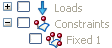
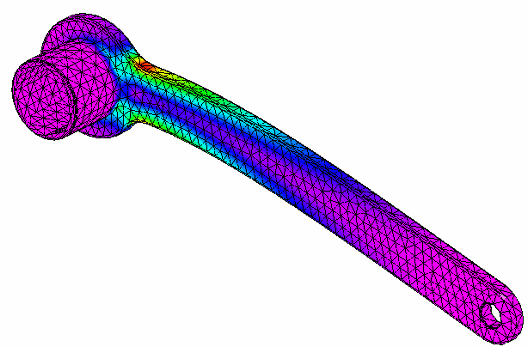
View nodal stress values
-
Work with the Probe command.
-
Use the Zoom Area command to zoom the socket end of the tool.
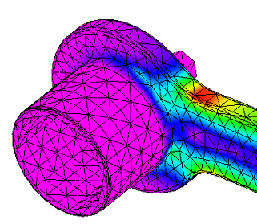
-
Choose the Home tab→Probe group→Probe command.

An empty Probe Table is displayed.
-
The default selection mode is Node. Move your cursor to a node similar to that shown, and click to select it.
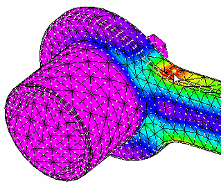
-
Move the cursor to position the label, and then click to place it.

The Probe Table updates with the values for stress and displacement at that particular element.

-
Continue to select additional nodes and observe the results.
Note:You can change the default formatting of numerical values and the number of decimal places using the Number Format list and the Decimals list on the Color Bar tab→Format group.
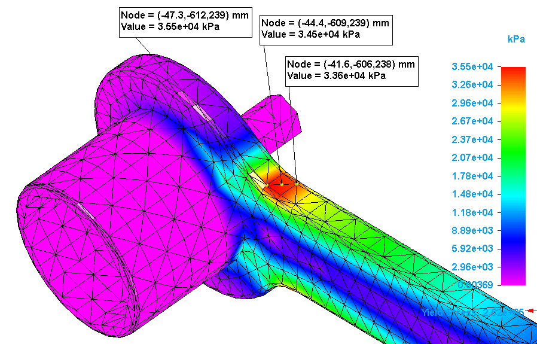
-
To see all of the stress values for the face that matches the highest values in the color bar:
-
Change the Probe Table selection mode to Face.
-
On the model, use QuickPick to select the top red face, Cylinder (Round 1).
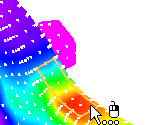
-
In the table, click Update.
-
-
In the Values column, select the values shown using these techniques:
-
Shift+click to select a range of cells.
-
Ctrl+click to select each additional cell.

The node data labels matching the selected values are displayed in the simulation results.

-
-
Close the Probe Table.
-
Use the Display Options menu
-
Work within the Show group.
-
Select the Home tab→Show group→Display Options command.

-
By default, Contour and Deformation are selected for the results display in a Von Mises stress plot.

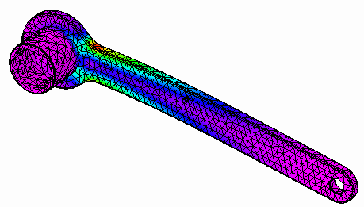
-
In the Display Options menu, select Undeformed Model.

Observe the change in the results display.
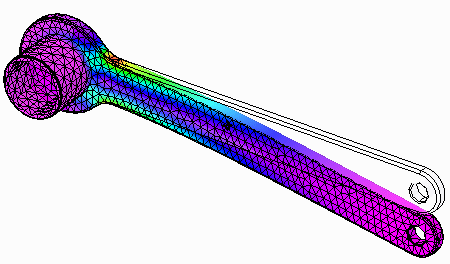
-
Clear the Undeformed Model check box to turn off the undeformed display. Close the Display Options menu.
-
Use contour styles
-
Work within the Contour Style group.

-
Use Zoom Area around the head of the tool. Observe that the Smooth Contour
 style is the default.
style is the default.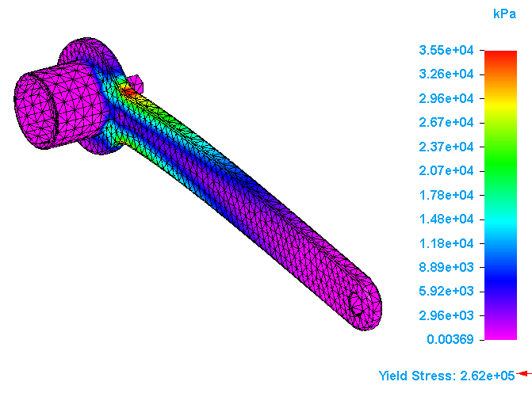
-
Select Banded Contour
 .
.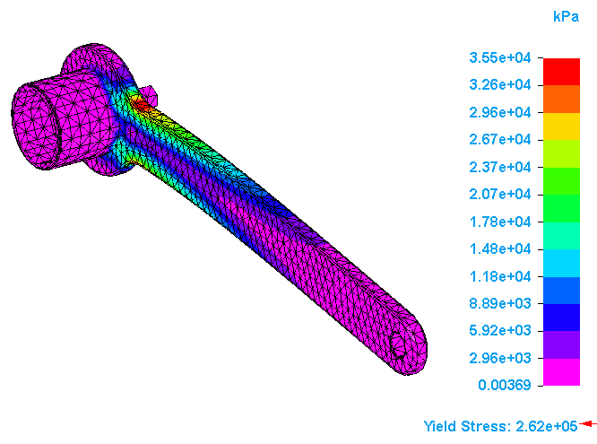
-
Select Element Contour
 .
.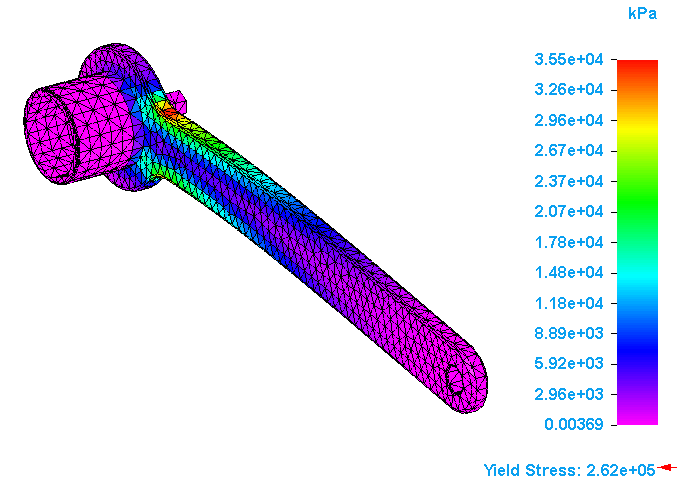
-
Select Iso Contour
 .
.Iso lines are the default display. Results are not applicable to the areas where only the mesh color is shown.
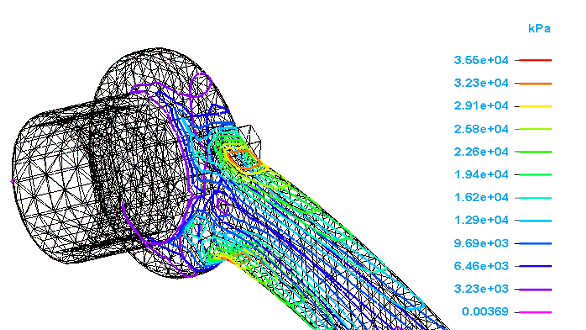
Note:You can show iso surfaces instead of iso lines. To learn how, see Display iso surfaces.
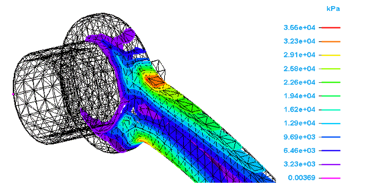
Tip:You can use the Dynamic Iso Contour command to dynamically review the iso lines or iso surfaces in sequence. This is useful for visualizing each iso contour color level with its corresponding result value. To learn how, see Use dynamic iso contours.
-
Use deformation
-
Work within the Deformation group.
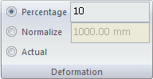
-
Ensure that the Deformation option and Smooth Contour style are active.
-
Observe the results for the default Percentage value of 10.
-
Change the percentage to 20 and observe the results.
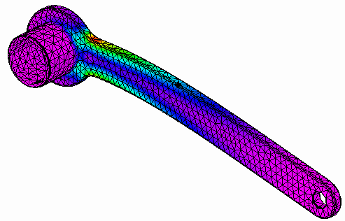
-
Select Normalize. Observe the results when you type different values in the Normalize box. Try using values of 10, 100, and 1000.
To learn about these options, see Primary, Deformed, and Undeformed display.
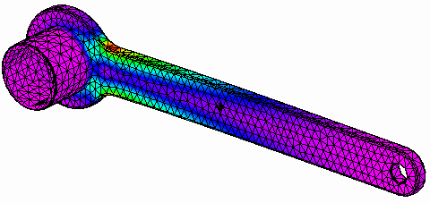
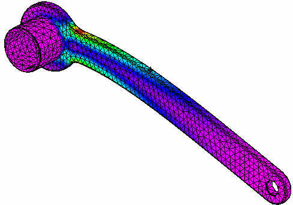
-
Reset the deformation to Percentage with a value of 10.
-
Use animation
-
Choose the Home tab→Animate group→Animate command to observe how the part deforms due to the load.
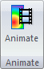
The part automatically begins moving through its entire range of deformation, and continues doing so until you perform an operation on the Animate command bar.
-
Use the options in the Play group to Play, Stop, Rewind to the beginning or end, and view the frame count of the animation.
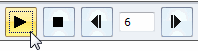
-
Stop the animation.
-
Type 1 in the Frames per second box, and then select Play.
-
Stop the animation; type 20 in the Frames per second box.
Notice the difference in the part movement.
-
Use the options in the Properties group to control the speed and length of time the animation runs. To learn about the differences between these options, see Animate command bar.
-
Select Save As Movie
 to store the animation as a .avi file.
to store the animation as a .avi file. -
Type a name for the movie, and then click Save.
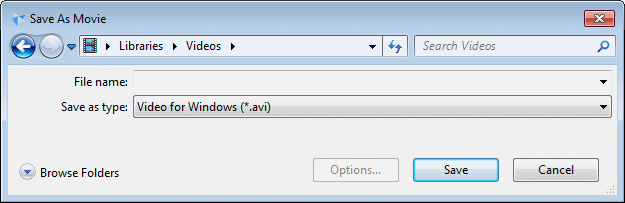
Use the Display tab
-
Work within the Primary Display group.
-
On the ribbon, click the Display tab. Use the Display Options command to turn off the model deformation. Note the options in the Primary Display group.

-
Change the Face Translucency to 50.
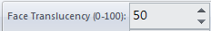
Note the change in appearance of the part faces.
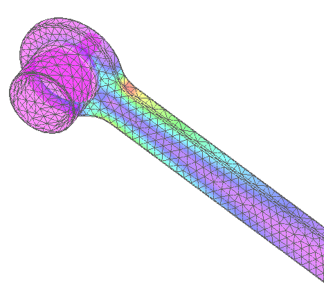
-
Change the Face Translucency to 80.
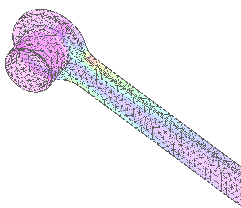
-
Change the Face Translucency to 5.
-
Change the Edge Color to Single Color.
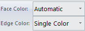
-
Select the Color button
 .
. -
In the Color dialog box, select a different color and click OK.
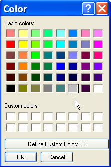
Notice the change in edge color on the model.
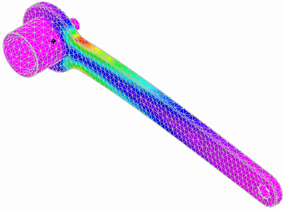
Note:You can change the Face Color of the faces in the same manner.
-
-
Work within the Undeformed Display group.
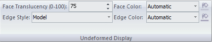
-
In the Show group→Display Options menu, select Deformation and Undeformed Model.
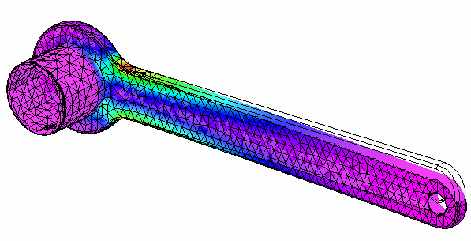
-
As you did for Primary Display, change the Face Translucency to 50.
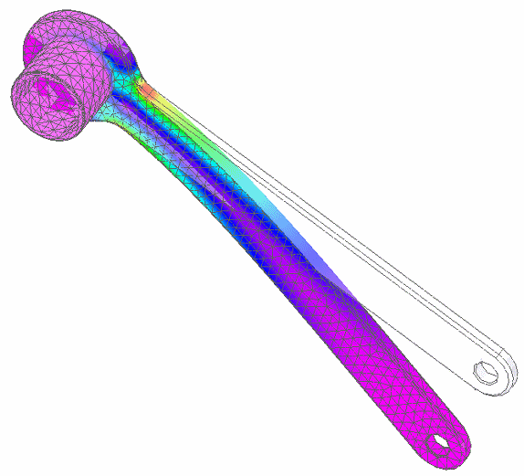
Note:You can change the display characteristics of an undeformed model in the same manner as for the deformed (primary) state of the model.
-
Use the Color Bar tab
-
Work within the Show group.
-
On the ribbon, click the Color Bar tab to access the color bar Show group.
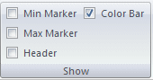
-
Use the Header check box to turn the results header off and on.
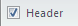
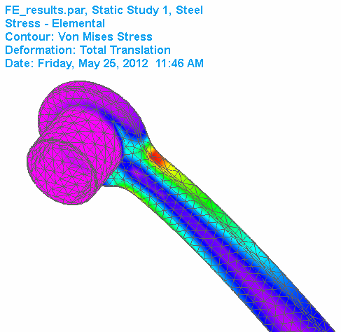
-
Show the Min Marker.
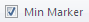
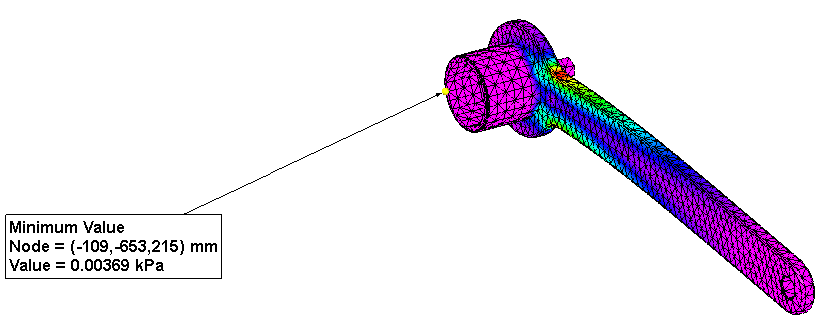
-
Show the Max Marker.
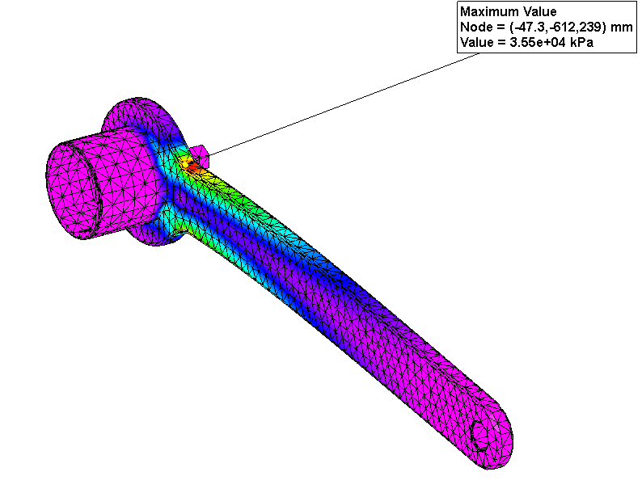
-
-
Work within the Scale group.
By default, the color bar scale is automatically determined by the range of results. This is displayed in the Min and Max boxes to the right of the All Results Scale button.
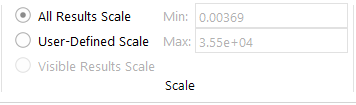
-
Select User-Defined Scale, type 10000 in the Min box, and press the Tab key.
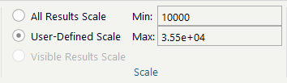
Note:You can change the scale to narrow the results to a smaller range of stress values.
Note the change in the contour color display on the model.
-
With User-Defined Scale still selected, type 15000 in the Min field, and press the Tab key.
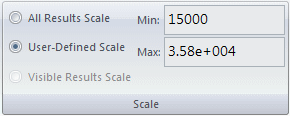
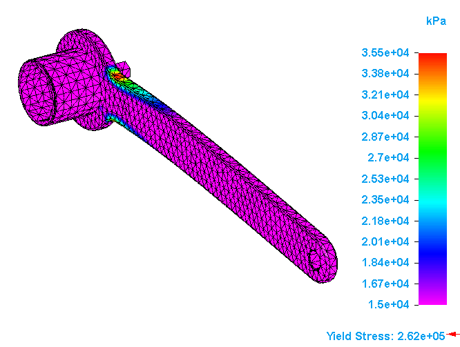
-
Close this file.
How do I
Display iso surfacesUse dynamic iso contours
Learn more
Probing analysis resultsContour styles
Primary, deformed, and undeformed display